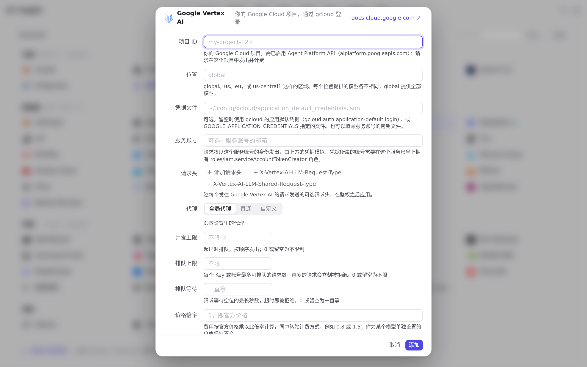
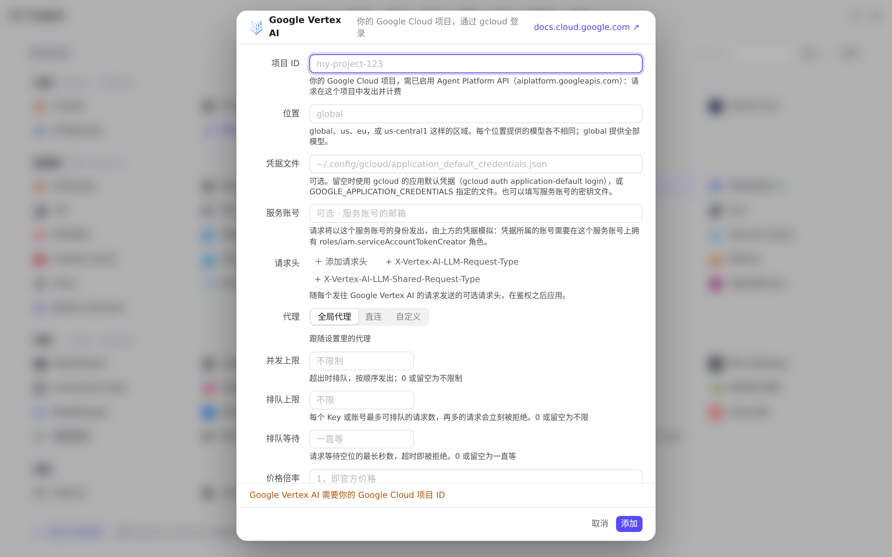
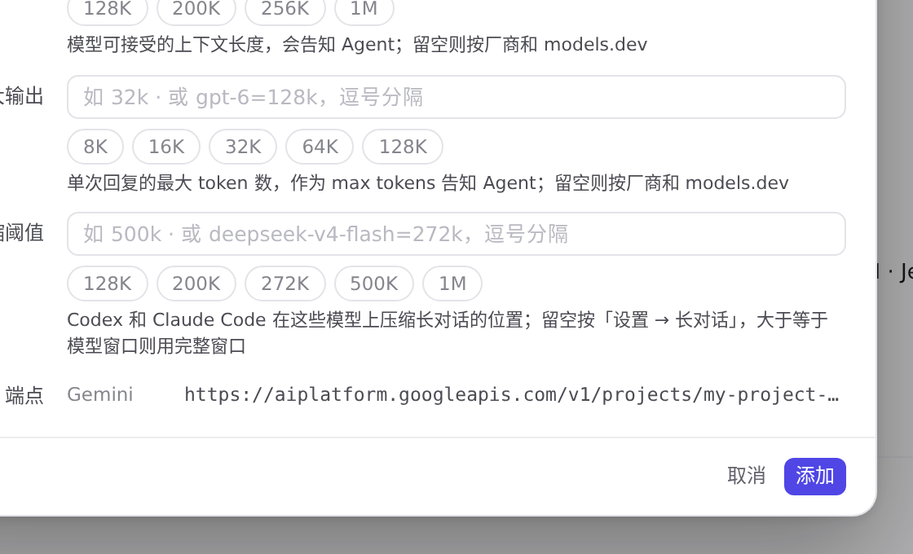
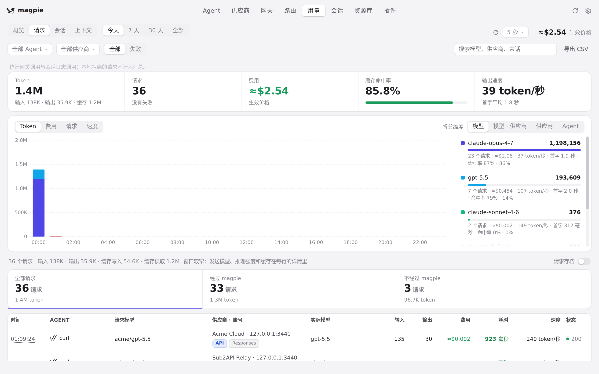

#1122 界面预览
commit 3356681 · 回到 PR · 供应商页新增 Google Vertex AI 预设：添加/编辑表单用项目 ID、位置、凭据文件、服务账号取代 API 密钥，并在填了项目后于「端点」里显示由项目与位置拼出的地址；列表行的标签改为说明用哪套 Google 凭据（服务账号、凭据文件或默认凭据），没有项目时显示「需要项目」。用量页「请求」的协议标签也能识别大小写不同的 generateContent 路径。
红线是鼠标走过的轨迹，红色圆环是一次点击；底部文字是这一步在做什么。空格暂停，← → 逐段查看。

Google Vertex AI 的添加表单与列表行 · Google Vertex AI 的编辑器

Google Vertex AI 的添加表单与列表行 · 点「添加」后的编辑器

Google Vertex AI 的添加表单与列表行 · 填了项目 ID 后编辑器里的「端点」
 Google Vertex AI 的添加表单与列表行 · 供应商列表里的 Google Vertex AI 一行
Google Vertex AI 的添加表单与列表行 · 供应商列表里的 Google Vertex AI 一行

用量「请求」里的协议标签 · 「请求」列表中每条请求的协议标签